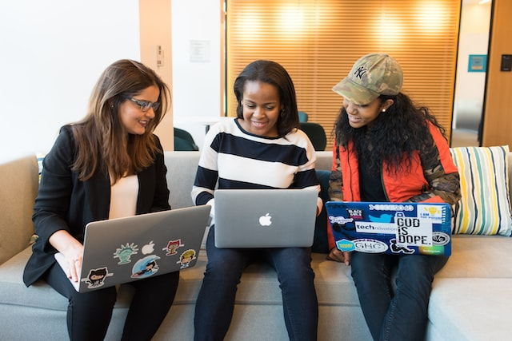
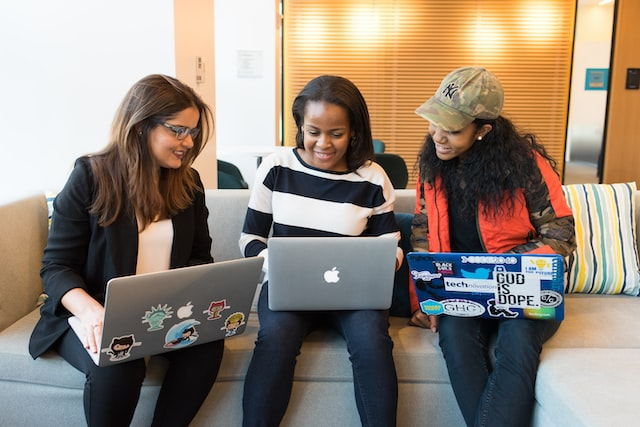
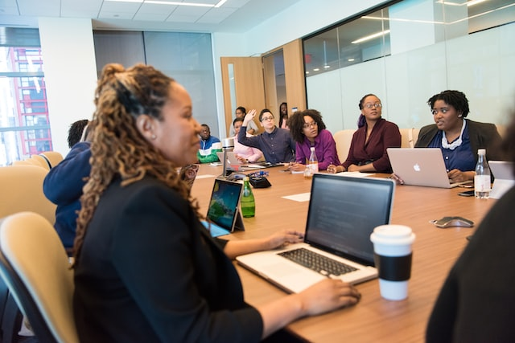
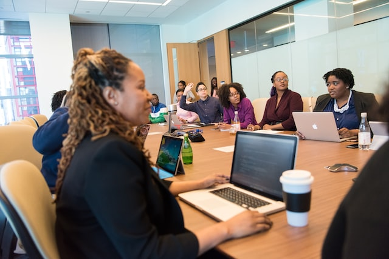

IT


 

 

Leadership team comes with over 40 years of expereince working with Fortune 500 companies spanning across 5 countires and 3 continents in the roles of Software Design and Development, Data science, Automation and Artificaial Intellegence. With previous expereince in training and recruiting for own IT services companies and startups we are equipped to understand the quality expected out of the candidates by our clients. Combining this with our unique approach of one-to-one assement of candidates, to understand their skill and match them with your requirement will give us the edge to ensure we deliver to your satisfaction.
Technologies we recruit for
- Web and Mobile Developers
- Data Science
- Data Engineering
- Cloud Computing
- Devops Engineers
- Cybersecurity
- Java Developers